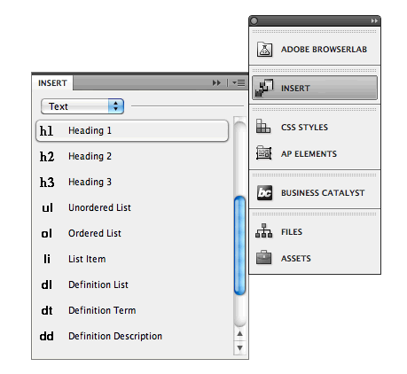
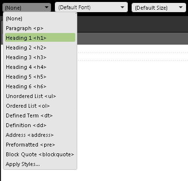

Lesson 1: Basic Features of Web Authoring Software
Overview
This lesson summarizes the basic features common to most popular web authoring software programs. It describes the overall working environment, and provides a summary of the HTML techniques you learned earlier in this course, and how to implement them using most web authoring tools. Use this handout as a starting point for exploring the web authoring software used in your class.
Learner Outcomes
At the completion of this exercise, you will:
- have a basic understanding of the features that are common to most web authoring software programs.
- be able to add HTML elements to a web page using web authoring software rather than writing code.
- be able to modify the attributes or properties of HTML elements using web authoring software.
Feature #1: Views
Most web authoring software provides multiple views of the web page you're working on.
- Standard, normal, or design view - This is typically the default view, which is a blank screen on which you type, paste, or insert content. This is very similar to a word processor screen.
- Code view - Allows you to view and work directly with the HTML code.
- Split - Both of the above views are displayed simultenously in separate windows.
Typically you can switch between views by selecting a relevant item from the program's main menu (usually within the View menu) or by selecting a relevant tab or button.
Activity
- Find how to switch between views in your web authoring software. Does the software provide more than one way to do this? Try typing something on the screen in Normal or Design View, then switch to Code View to see the HTML that was generated by the web authoring tool.
- Ask your instructor for instructions on how to open and save files with your web authoring software in your school's computing environment.
- Now open your portfolio file tools.html in your web authoring software. At this point the page should have a "skip to main content" link, banner image, main H1 heading, and a navigation menu. Practice switching between views and exploring your page using your web authoring tool.
Feature #2: Creating Headings and SubHeadings
In Normal or Design View, Web authoring software is very similar to word processing software. One or more toolbars or panels are available with buttons for adding common features such as headings, subheadings, links, ordered or unordered lists, etc., or for formatting text. The following examples show what this looks like in two of the most popular programs.
Selecting Headings in Adobe Dreamweaver
Selecting Headings in Microsoft Expression
Activity
- Using your web authoring software, add a level 2 sub-heading (h2) with text "My Web Authoring Software" within the main content of your web page.
- Beneath this subheading, write a short paragraph identifying what web authoring software you're using, including the version number.
- After you've added this content to your web page, switch to Code View to see the HTML that was generated by the web authoring tool. Does it differ at all from the HTML you would have used if you were coding this page manually?
Feature #3: Inserting Links
In many web authoring software products, you add a link to a document by selecting Insert from the menu, then Link or Hyperlink. If you do this after you have selected existing text in the document, a dialog box will appear prompting you for the destination of the link (and possibly other information) then the text you selected will be converted into a link. Most web authoring software tools additionally provide a button or icon that allows you to quickly insert a link.
Activity
- Explore your software, and find out how many ways there are to add a link to your web page.
- In the previous Activity section (above), the paragraph you added includes the name of the web authoring software you're using. Select this text, and convert into a link that leads to the website for that software (if you're not sure, just search the Web).
- Now switch to Code View to see the HTML that was generated by the web authoring tool.
Feature #4: Inserting Images
In many web authoring software products, you add an image to a document by selecting Insert from the menu, then Image or Picture. A dialog box will appear, prompting you for the location of the image, and (if your software is accessibility-aware) for alternate text. After you have inserted the image into your webpage, you can go back later and edit its attributes in a Properties dialog box or panel. Image Properties are typically accessed by right clicking on the image and selecting Properties from the popup menu. The following is an example Picture Properties dialog.
Activity
- Explore your software, and find out how to insert a picture.
- Create a new section in your web page with level-2 sub-heading (H2) "Inserting an Image".
- Create a new image using skills you learned in Unit 4 on graphics, or download an image from the Internet. If you chose to download an image, be sure to choose only an image with a copyright that allows this (refer to the earlier lesson on acquiring images for web graphics.
- Insert the new image into the new section of your web page. Be sure to include alternate text that briefly describes the image for users who are unable to see it.
- Feel free to play with other properties in the Image Properties dialog to see what effect they have.
- After changing image properties, switch to Code View to see the HTML that was generated by your changes.
More Activities
The best way to learn a new software application is to explore it. Try adding additional components to your web page, including ordered and unordered lists, tables, form fields, and anything else that you're curious about. Keep your document organized using subheadings. If you add new sections to your document, add corresponding links to these sections from your home page.
All done?
Proceed to the next lesson, in which you will be changing the presentation of the page using CSS.